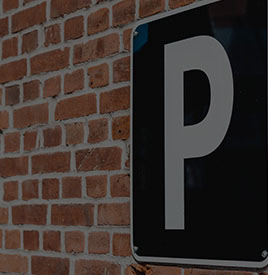
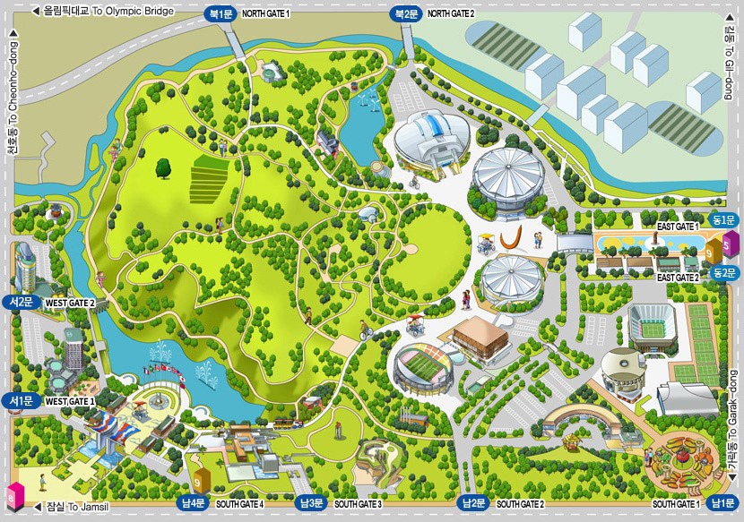

HOME>공원소개>주차안내
주차안내
공원 주차요금 안내
| 구분 | 요금 | 할인 |
|---|---|---|
| 소형 | 1시간 이내 1.000원 이후10분당 500원 |
-경차, 장애인, 저공해, 국가유공자 50% 할인 -다자녀 우대카드 소지자 2자녀 25%, 3자녀 50%할인 |
| 대형(24인승,2.5톤이상) | 12,000원 |

공원 내 대형행사가 개최될 경우 선불제로 전환 및 주차장 운영시간 탄력적으로 운영
- 선불제 전환 일정 올팍소식 게시판에 공지
- 선불제 전환 시 소형 5,000원 / 대형 12,000원 정액징수
※ 선불제 전환전 입차차량은 시간제 요금인 후불제 적용
출차 후 재입차 시 정상요금 징수
20분 이내 출차 시 무료
특별한 사유 없이 72시간 이상 차량을 방치할 경우 견인조치 될 수 있음
공원 월주차 안내
| 출입문 | 주차구역 | 금액 |
|---|---|---|
| 북2/동2/남2문 | P1A,P2 | 100,000원 |
| 남3문 | 소마미술관 지하주차장 | 120,000원 |
| 남4문 | 남4문 주차장 | 150,000원 |
주5일(월~금) 이용 가능(주말 주차시 일반 이용요금 적용)
1톤 화물 및 12인승 이하 승합/승용차량만 등록 가능
주요건물 인근 주차장 안내
- 주차장 번호: P4
- 주차장과의 소요시간: 1분
- 가능 주차대수: 172대
- 입차시간: 06:00~22:00
- 가장 가까운 입구: 북2문/ 동2문/ 남2문
- 가장 가까운 지하철역: 5, 9호선 올림픽공원역
- 주차장 번호: P5
- 주차장과의 소요시간: 1분
- 가능 주차대수: 172대
- 입차시간:06:00~22:00
- 가장 가까운 입구: 북2문/ 동2문/ 남2문
- 가장 가까운 지하철역: 5, 9호선 올림픽공원역
- 주차장 번호: P6
- 주차장과의 소요시간: 1분
- 가능 주차대수: 172대
- 입차시간:06:00~22:00
- 가장 가까운 입구: 북2문/ 동2문/ 남2문
- 가장 가까운 지하철역: 5, 9호선 올림픽공원역
- 주차장 번호: P7
- 주차장과의 소요시간: 1분
- 가능 주차대수: 172대
- 입차시간:06:00~22:00
- 가장 가까운 입구: 북2문/ 동2문/ 남2문
- 가장 가까운 지하철역: 5, 9호선 올림픽공원역